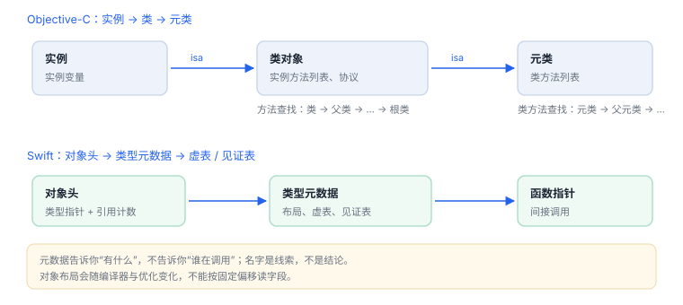

Objective-C / Swift 元数据
元数据告诉你“有什么”，不告诉你“谁调用谁”
Objective-C 与 Swift 都把类型信息放进了二进制：类、方法、协议、属性。读元数据可以快速列出能力清单，但调用关系与业务含义仍要靠运行时与反汇编确认。
场景 你在调试器里打印一个类的字段，得到一串偏移和大小。它们描述的是内存布局，不是业务含义——两者之间还隔着一次方法调用。
1. Objective-C 的运行时表
| 接口 | 得到什么 | 注意 |
|---|---|---|
objc_getClassList | 全部已注册类 | 含系统框架的类 |
class_copyMethodList | 某个类的实例方法 | 不含父类方法 |
class_copyProtocolList | 类遵循的协议 | 协议方法需单独枚举 |
class_copyIvarList | 实例变量 | 布局不是稳定契约 |
class_getSuperclass | 父类链 | 方法查找的真实路径 |
列出自有类的方法与协议（调试构建中运行）
Class cls = NSClassFromString(@"LoginService");
unsigned int count = 0;
Method *methods = class_copyMethodList(cls, &count);
for (unsigned int i = 0; i < count; i++) {
NSLog(@"%@", NSStringFromSelector(method_getName(methods[i])));
}
free(methods);2. Swift 的名字与方法
Swift 符号经过修饰，名字里编码了模块、类型与参数/返回类型。把修饰名还原，是阅读 Swift 二进制的第一步。
批量还原符号
nm -gU YourApp | grep " _\$s" | awk '{print $3}' | head -20 | xcrun swift-demangle- 修饰名以模块名开头，随后是类型与成员，参数类型也参与编码。
- 泛型特化会生成附加符号，看起来像“重复的方法”，实际是针对具体类型的实现。
- 只有被 Objective-C 暴露的方法才会出现在 Objective-C 的运行时表里。

实机输出：类数据段里的结构（macOS 系统应用）
Contents of (__DATA_CONST,__objc_classlist) section
isa 0x800d6ae100144670
superclass 0xc00db5ab00000797
cache 0x4010000000000794
vtable 0x0
data 0x802561f800143462 Swift class
instanceStart 16
instanceSize 152
baseMethods 0x0
baseProtocols 0x0
ivars 0x18000000140320读法：data 指向类的只读描述（Swift class 会在标志位里标出）；baseMethods 0x0 说明方法列表不在只读区，运行时才复制到可写列表；instanceSize 152 是实例大小，含对象头。指针上的高位是 arm64e 的签名位，不能当普通地址用。
3. 从元数据到行为的距离
| 元数据能回答 | 不能回答 |
|---|---|
| 存在哪些类与方法 | 哪个方法真正被调用 |
| 方法签名与参数类型 | 参数的实际取值与来源 |
| 协议与继承关系 | 运行时替换后的实现 |
| 属性名称 | 谁持有该对象、何时释放 |
4. 在调试器里枚举
不必写代码也能看：在断点停住后，用表达式执行一段运行时调用，或直接打印对象所属类与父类链。若符号缺失，可用类名字符串反查。
lldb 中的快速检查
(lldb) po [$x0 class]
(lldb) po [[$x0 class] superclass]
(lldb) expr -l objc -O -- [LoginService new]5. 解读原则
- 名字是线索，不是结论：
uploadToken不代表真的会上传，可能是历史残留。 - 系统框架的类会混进列表，先按模块前缀过滤。
- 不要把对象内存布局当作接口契约，版本升级会变。
- 元数据之外的调用关系，用断点与反汇编补。
6. 练习：枚举、定位、验证
- 枚举自有应用中某个服务类的全部方法，圈出与登录、网络相关的入口。
- 把二进制里 20 个 Swift 符号还原成可读形式，标注哪些是泛型特化。
- 选一个方法，用断点确认它是否真的被调用，验证你的元数据推断。
名字是线索不是结论
枚举到
枚举到
uploadToken 不代表真的上传；要确认调用路径，仍需断点或反汇编。延伸：08 hook 原理 · 11 ARM64 反汇编 · R01 对象与派发
7. 数据细节：类结构里的量级
| 字段 | 含义 | 量级 |
|---|---|---|
instanceStart | 首个实例变量相对对象头的偏移 | 16 字节（对象头固定部分） |
instanceSize | 实例总大小 | 数十至数百字节，随字段增加 |
baseMethods | 只读方法列表指针 | 8 字节指针，可能为空 |
| 方法项 | 名称、类型、实现 | 每项 24 字节（三个指针） |
字段大小决定了“按偏移读字段”的脆弱性：加一个属性、改一次对齐，偏移就全变。
8. 一次真实排查记录：枚举出来的类名是空的
- 现象：枚举类列表时，业务类一个都看不到。
- 先确认时机：类尚未注册时列表里确实没有。
- 再确认命名：Swift 类在运行时可能带模块前缀，按短名查不到。
- 换查法：按协议或父类过滤，或从已注册的入口对象反查
isa。 - 结论与限制：记录“类名带模块前缀”，并注明结论只对该构建的模块名成立。
9. 自测
- 为什么
class_copyMethodList拿不到父类方法？ - Swift 方法为什么可能不出现在 Objective-C 运行时表里？
- “存在某方法”与“该方法被调用”之间差哪几步验证？